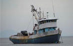

Le programme 'S&T' au CTA
Connaissances pour le développement, un site internet du CTA, soutient le dialogue politique sur les S&T pour le développement agricole et rural dans les pays d'Afrique, des Caraïbes et du Pacifique. Ce site permet à la communauté scientifique ACP - qui se compose de scientifiques et de technologues du développement et de la recherche agricole, de décideurs, d'agriculteurs, d'autres personnes intéressées et d'autres acteurs - de partager et de contrôler les résultats des efforts nationaux et régionaux et de coopérer afin de mettre la science et la technologie au service du développement de l'agriculture dans leurs pays.

La présente note d’orientation a pour but de mobiliser la communauté scientifique des pays ACP autour de la perspective d’un leadership basé sur les connaissances propre à assurer la sauvegarde et la restauration de cette ressource vitale, en vue de garantir la sécurité alimentaire et nutritionnelle et contribuer à la croissance économique. Les responsables politiques des pays ACP, ainsi que les donateurs à l’échelle régionale et internationale, sont encouragés à accroître les investissements pour renforcer les capacités nécessaires dans les systèmes de ST&I au sein de la région. 20/03/2008
Read more...
{kind=link}
Read more...
Ce projet de recherche a pour objectif de renforcer les capacités des ACP afin de leur permettre de mieux comprendre les forces et les faiblesses du système local de science, technologie et innovation dans le secteur agricole. Les résultats de cette étude fourniront des informations sur la nature du système ainsi que sur d’autres approches qui pourraient être envisagées au niveau des politiques et programmes complémentaires et des organisations de soutien qui pourraient aider à renforcer le système agricole de science, technologie et innovation (ASTI), en particulier pour le sous secteur des produits ou produits de base sur lesquels porte l’analyse. Il devrait également proposer un éventail d’éléments pour les politiques futures dans le domaine de l’agriculture et de la science, de la technologie et de l’innovation et devrait prouver à tous les acteurs la nécessité de se concentrer sur les évolutions de la science et de la technologie dans le secteur agricole et plus spécifiquement sur les échanges agricoles, la compétitivité et la sécurité alimentaire dans le contexte des objectifs plus larges du développement. 25/03/2006
Read more...
{kind=link}
Read more...
Ce document décrit la méthodologie qui doit être utilisée pour une étude de cas effectuée par une institution partenaire des ACP. Le mandat stipule :
« Développer une méthodologie pour permettre à une institution ACP d’effectuer une étude de cas dans chacun des deux pays cibles afin de développer et de mettre en place des programmes pour une recherche induite par la demande dans un sous secteur donné, en attirant l’attention des décideurs sur des questions pertinentes dans un délai minimum de 6 mois après la formation. Cette activité servira à évaluer le succès de cette formation dans trois domaines critiques : l’établissement des priorités de la recherche, l’implication d’autres acteurs dans les processus de prise de décision, et l’influence exercée sur les décideurs. »
Ainsi, les principaux résultats attendus de l’étude de cas sont les suivants :
Elaborer et mettre en place des programmes de recherche induite par la demande
Attirer l’attention des décideurs sur les questions pertinentes
Etablir les priorités de la recherche
Impliquer d’autres acteurs dans le processus de décision
L’étude de cas devra être achevée dans les six à dix mois suivant le cours de formation, et la méthodologie telle qu’elle est conçue tient compte de ce délai. Apporter des modifications importantes au niveau de la politique et réaligner les procédures de fixation des priorités de la recherche dans les systèmes nationaux de recherche agricole sont des procédés qui peuvent prendre des années pour se réaliser, et la méthodologie de l’étude de cas est également conçue pour encourager la mise en oeuvre de changements qui prendront encore du temps pour mûrir une fois l’étude de cas terminée. La méthodologie est donc non seulement conçue pour permettre une progression pendant l’étude de cas, mais également pour préparer le terrain à des changements individuels, organisationnels et institutionnels à long terme qui renforceront la collaboration entre les acteurs dans le système ASTI. 24/03/2006
Read more...
Read more...
E-mail Newsletter
Interact with us
Members
- CTA Top 20 Innovations that Benefit Smallholder Farmers
- Thon, pêche côtière, bêche-de-mer et développement de l’aquaculture dans le Pacifique occidental et central : défis actuels et besoins futurs
- Mars/Avril 2015 Infolettre K4D
- How to redefine innovation and development: An African perspective
- The Ocean and the Human Family - World Oceans Day 2015